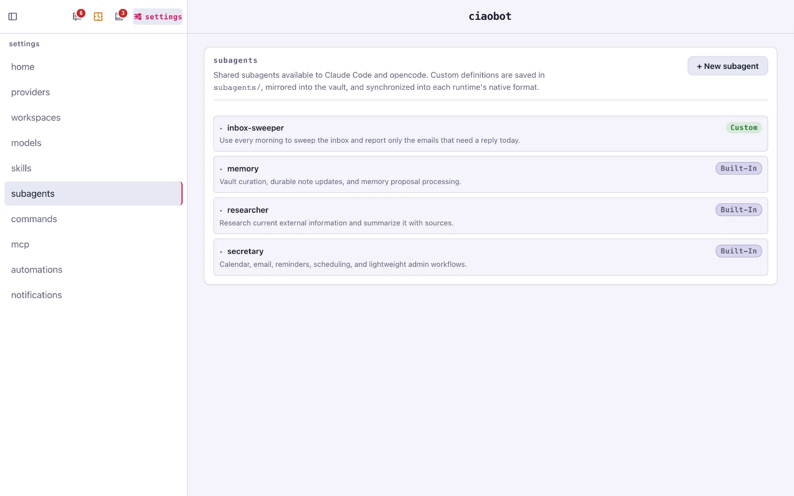
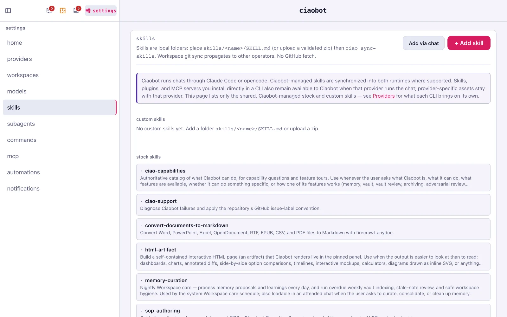
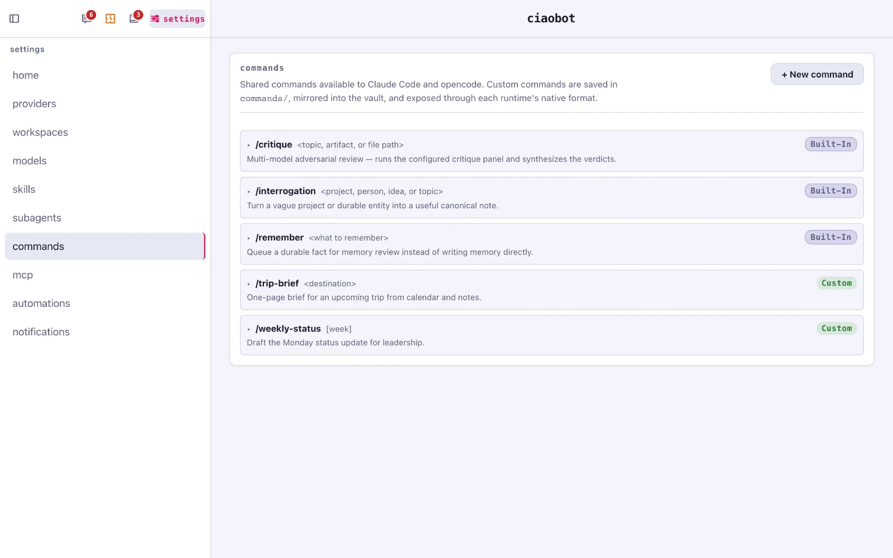
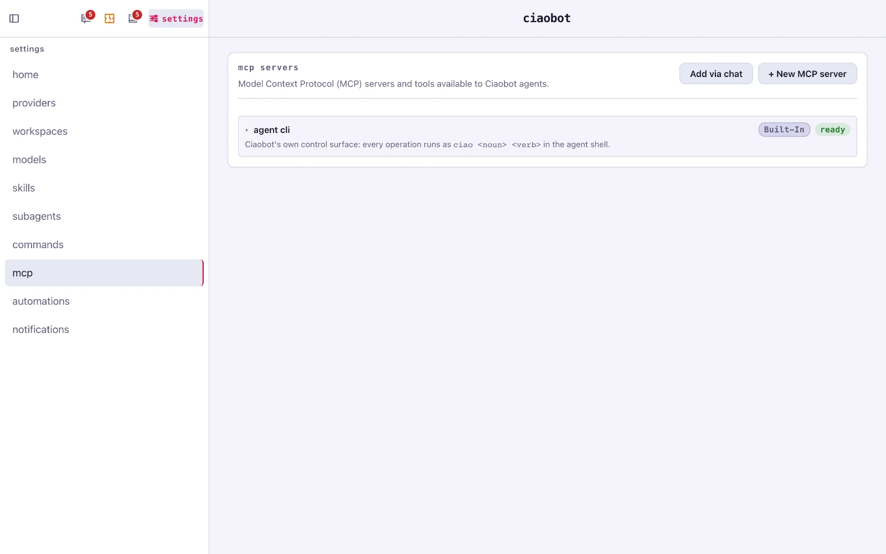

Under the hood
What's built in, and how to add more
Ciaobot comes with its own helpers: subagents for focused jobs, skills that teach it how to do things, a few slash commands, and a command-line tool it uses to run the app. You can add as many of your own as you like.
The ciao tool: how the assistant runs the app
Ciaobot includes a command-line tool, ciao, that the AI uses to act on the app itself: search memory, create a project, archive a chat, schedule a task. That's why anything you can click, you can also ask for. You never need to type it yourself.
Every subagent, skill and command below links to its file on GitHub, so you can read the exact prompt Ciaobot uses, or copy it as a starting point for your own.
Subagents 3 included
A subagent is a helper the main chat hands a self-contained job to. It works in its own separate context and reports back a summary, so your chat stays short and on topic. While one works, it appears under its chat in the sidebar.
| Subagent | What it's for |
|---|---|
secretary | Calendar, email, reminders, scheduling and light admin. |
researcher | Looks up current information on the web and summarises it with sources. |
memory | Careful edits to your notes: updating a person or project note, working through memory suggestions. |

Skills 10 + Google
A skill is a short instruction file that teaches the assistant how to do one kind of task well. Only its one-line description is always visible; the full instructions load when a task calls for them. Skills follow the open Agent Skills format, so they work in both Claude Code and opencode.

| Skill | What it does |
|---|---|
ciao-capabilities | Knows every Ciaobot feature, answers "can you…?" and gives tours. |
ciao-cli | How to use the ciao tool to change the app's state. |
web-research | Reliable web lookups that check the sources. |
html-artifact | Builds interactive pages (dashboards, charts, comparisons) shown beside the chat. |
visual-plan | Turns bigger work into a reviewable plan, with an optional visual companion. |
workspace-authoring | Writes and maintains longer working documents in your notes. |
convert-documents-to-markdown | Reads Word, PowerPoint, Excel, PDF and more by converting them to text. |
memory-curation | The nightly memory tidy-up procedure. |
sop-authoring | Helps you write clean skills and step-by-step procedures of your own. |
ciao-support | Diagnoses problems with Ciaobot and helps report them. |
When a workspace is linked to a Google account, Ciaobot also installs about 20 Google skills for Gmail, Calendar, Drive, Docs, Sheets, Slides, Tasks and Forms.
Slash commands 3 included
Type / in the message box to pick one.
| Command | What it does |
|---|---|
/remember | Saves a fact as a memory suggestion for you to confirm. |
/critique | Asks a panel of other AI models to review a plan or answer, then sums up their verdicts. |
/interrogation | Interviews you about a vague project or person and turns the answers into a useful note. |
Your own commands work the same way: a name, a short description and the prompt they send. Handy for anything you type often, like /weekly-status or /trip-brief Lisbon.

Add your own
There are three ways to give Ciaobot new abilities, and the easiest is always the same: ask Ciaobot to make it. The MCP and Skills settings even have an Add via chat button that opens a chat for exactly that.
| If you want to… | Use | Example |
|---|---|---|
| Reach an app or service Ciaobot can't see yet | MCP server | Read and update your Notion pages |
| Stop repeating how a task should be done | Skill | "How I write the weekly status update" |
| Hand off a self-contained job and get back a summary | Subagent | Research five venues and compare them |
| Do the same task on a timetable | Automation | Every Monday at 8, draft the status update |
| Save a fact about you or a project | Just say it | "Remember that the budget is now €22k" |
🔌 MCP servers: connect other apps
The Model Context Protocol is the standard way to plug an outside service (Notion, Linear, GitHub, your home automation) into an AI assistant as a set of tools.
Settings → MCP → + New MCP server: give it a name and either a web address or a command to run. Tokens are stored in your workspace's private settings file, never in the server list.

🧠 Skills: teach it how you like things done
Settings → Skills → + Add skill takes a zipped skill folder, or put a folder with a SKILL.md file in your workspace's skills/ folder. How skills work (Claude Code) · in opencode.
🤖 Subagents: helpers for bigger jobs
Settings → Subagents → + New subagent: a name, a description of when to use it, and its instructions. Ciaobot saves it once and makes it available to both Claude Code and opencode. About subagents (Claude Code) · in opencode.
Already set up in Claude Code or opencode?
You keep it. Skills, plugins, subagents and MCP servers you've installed in Claude Code or opencode are also available when that tool runs a Ciaobot chat. More →